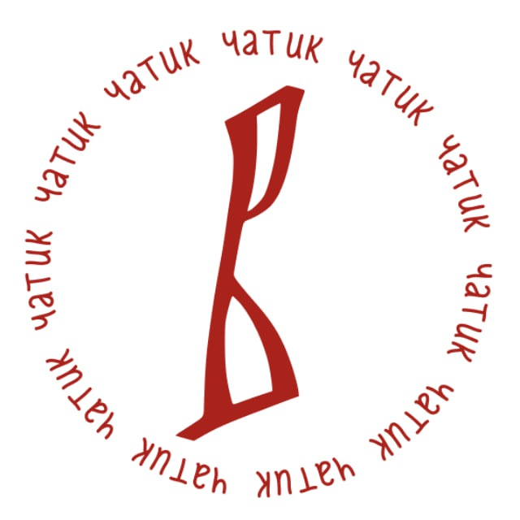

Загружаю тексты Псалтири…

Псалтирь "Воскресенье"
Выберите режим текста и нужную кафизму. Сайт соберёт всё в один поток: обычное начало, псалмы, славы, молитвы о живых и усопших, а затем молитву по окончании.
Сначала выберите
Загружаю тексты Псалтири…